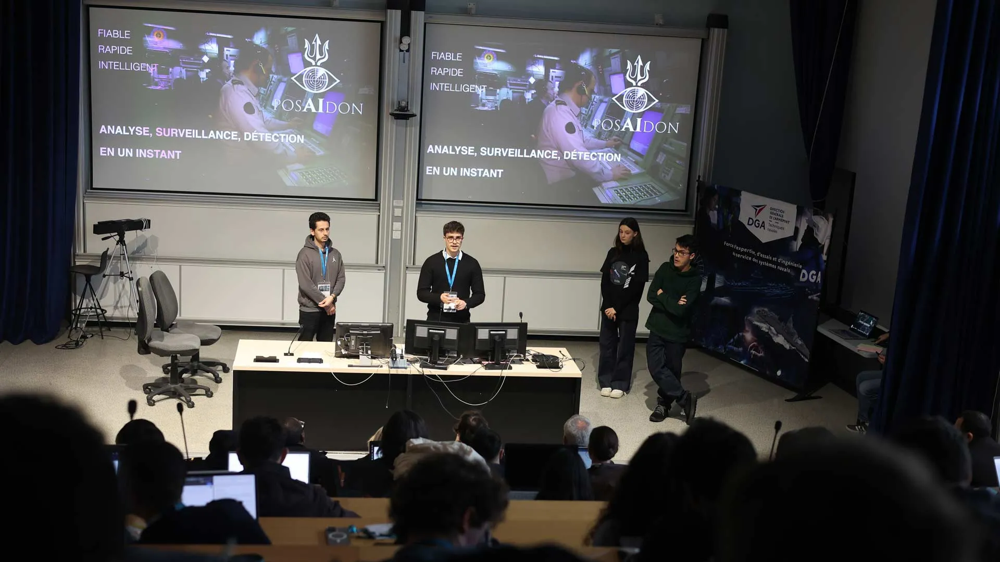

Combine observations
Use dedicated tools for AIS tracks, radio-frequency signals and satellite ephemerides.
Team project · SPASEA hackathon · 2025
See what a single signal cannot reveal.
A maritime copilot combining vessel positions from AIS (Automatic Identification System), RF (radio-frequency) signals and satellite ephemerides to help interpret a situation.

First prize at the 2025 SPASEA hackathon, organised by Naval Group and the DGA in partnership with ENSTA. ENSTA documents the event and the team’s award.
A vessel that stops transmitting its AIS position is not necessarily suspicious. The challenge is to combine observations into an explainable situation for an operator, rather than an isolated alert.
Use dedicated tools for AIS tracks, radio-frequency signals and satellite ephemerides.
An assistant-style interface supports questions about the situation and summarises the analysed evidence.
Focus the prototype on a demonstrable scenario and present the approach to a technical and operational jury.
A team prototype demonstrated and presented to the hackathon jury. First prize recognises this collective work; it does not measure detection performance at sea.
THE APPROACH
AIS tracks · RF signals · satellites
Agent tools and multi-source analysis
A summary for the operator
Bridge heterogeneous data, technical analysis and a concrete question from an operator.
A team-built hackathon prototype. This is not an operational surveillance system or a detection capability validated at sea. No public prototype repository is presented here.
Contact
Contact me about a career opportunity or research topic.
Paris region · Mobile across France
Fluent French · Fluent English · Native Arabic